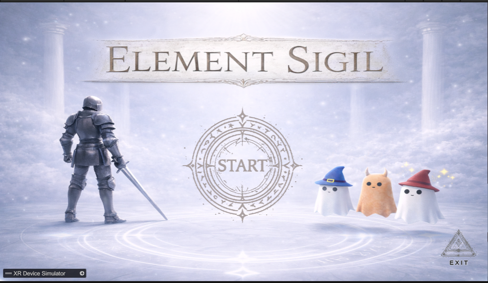
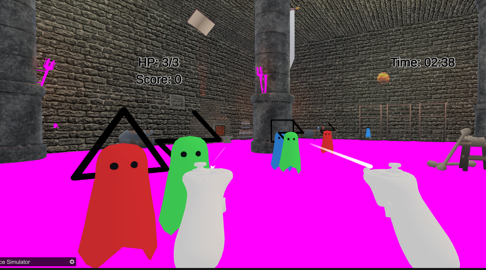
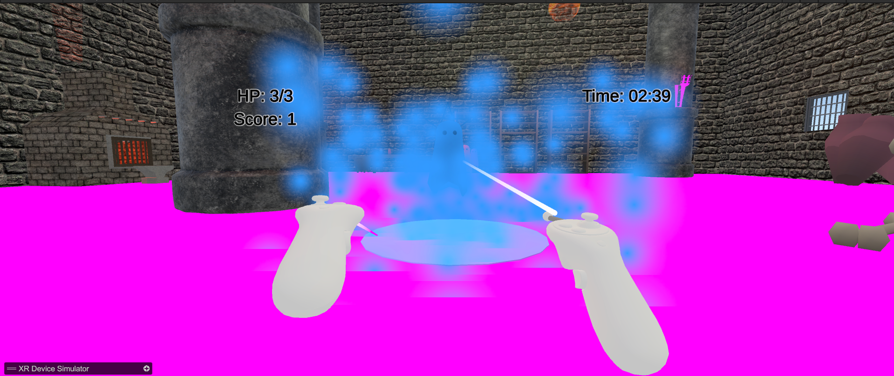

Element Sigil

本專案結合戰鬥與創作，嘗試探索一種嶄新的 VR 遊戲玩法，突破傳統僅著重於擊敗敵人的框架，讓玩家在力量與美感之間取得平衡。遊戲希望在短時間內帶給玩家成就感與創作樂趣。同時體驗在 VR 環境中親手塑造世界的刺激感；透過直覺式的操作設計，也讓每位玩家都能輕鬆上手。


本遊戲以 VR 符文繪製與戰鬥為核心，玩家需在空中描繪圓形、三角形、閃電等符號來施放攻擊。並在教學區學習操作後進入主場景，與持續生成並追擊玩家的「色彩幽靈」對戰。玩家扮演「符文召喚者」，初始擁有 3 HP，遭受三次攻擊即失敗；敵人被擊敗後會釋放顏料，而「符文核心」則偶爾提供回血與護盾。隨著戰鬥進行，場景會逐漸被色彩覆蓋，最後在結束時呈現由戰鬥所創造出的獨特藝術畫面。


觀看遊戲影片